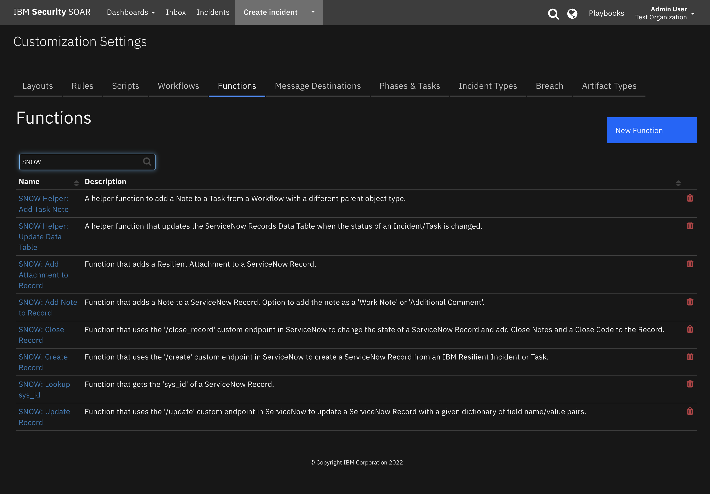

gRPC Interface#
Table of Contents #
Release Notes#
Version |
Date |
Notes |
|---|---|---|
1.1.3 |
11/2023 |
Convert Workflow script from Python2 to Python3 |
1.1.2 |
08/2023 |
Only Python 3.9 supported |
1.1.1 |
04/2022 |
Pinned |
1.1.0 |
09/2021 |
Add app host support; add configuration options for channel and function definition |
1.0.0 |
04/2019 |
Initial Release |
Note: as of v1.1.0 the configurations for grpc_channel can be defined in the app.config. For integration server this will require updating your server’s app.config to match the correct format. This is optional and the old functionality of defining these values in the function call remains and takes precedence over the values set in the configuration. grpc_channel is a required configuration setting for selftest.
grpc_channel=<<host>>:<<port>>
grpc_function=<<the name of the package>>:<<the function to call>>
Overview#
This Function provides a general purpose wrapper that allows you to call gRPC services from within IBM Resilient
Using gRPC you can efficiently connect services in and across data centers to help with your Incident Response
This version supports Unary RPCs where the client sends a single request to the server and gets a single response back, just like a normal function call.
See https://grpc.io/ for more information on gRPC
We recommend following the gRPC
helloworldexample here to help get this Integration up and running.

Requirements#
This app supports the IBM Resilient SOAR Platform and the IBM Cloud Pak for Security.
Resilient platform#
The Resilient platform supports two app deployment mechanisms, App Host and integration server.
If deploying to a Resilient platform with an App Host, the requirements are:
Resilient platform >=
46.0.8131.The app is in a container-based format (available from the AppExchange as a
zipfile).
If deploying to a Resilient platform with an integration server, the requirements are:
Resilient platform >=
46.0.8131.The app is in the older integration format (available from the AppExchange as a
zipfile which contains atar.gzfile).Integration server is running
resilient_circuits>=46.0.0.If using an API key account, make sure the account provides the following minimum permissions:
Name
Permissions
Org Data
Read
Function
Read
Please refer to the release notes above for information on upgrading your configuration to take advantage of new configuration options available in v1.1.0 or greater.
The following Resilient platform guides provide additional information:
App Host Deployment Guide: provides installation, configuration, and troubleshooting information, including proxy server settings.
Integration Server Guide: provides installation, configuration, and troubleshooting information, including proxy server settings.
System Administrator Guide: provides the procedure to install, configure and deploy apps.
The above guides are available on the IBM Knowledge Center at ibm.biz/resilient-docs. On this web page, select your Resilient platform version. On the follow-on page, you can find the App Host Deployment Guide or Integration Server Guide by expanding Resilient Apps in the Table of Contents pane. The System Administrator Guide is available by expanding System Administrator.
Cloud Pak for Security#
If you are deploying to IBM Cloud Pak for Security, the requirements are:
IBM Cloud Pak for Security >= 1.10.
Cloud Pak is configured with an App Host.
The app is in a container-based format (available from the AppExchange as a
zipfile).
The following Cloud Pak guides provide additional information:
App Host Deployment Guide: provides installation, configuration, and troubleshooting information, including proxy server settings. From the Table of Contents, select Case Management and Orchestration & Automation > Orchestration and Automation Apps.
System Administrator Guide: provides information to install, configure, and deploy apps. From the IBM Cloud Pak for Security Knowledge Center table of contents, select Case Management and Orchestration & Automation > System administrator.
These guides are available on the IBM Knowledge Center at ibm.biz/cp4s-docs. From this web page, select your IBM Cloud Pak for Security version. From the version-specific Knowledge Center page, select Case Management and Orchestration & Automation.
Proxy Server#
The app does support a proxy server.
Python Environment#
Python 3.7 or greater is supported for this app. Additional package dependencies may exist for each of these packages:
grpcio-tools>=1.19.0
grpcio>=1.19.0
resilient_circuits>=30.0.0
Installation#
Install#
To install or uninstall an App or Integration on the Resilient platform, see the documentation at ibm.biz/resilient-docs.
To install or uninstall an App on IBM Cloud Pak for Security, see the documentation at ibm.biz/cp4s-docs and follow the instructions above to navigate to Orchestration and Automation.
App Configuration#
The following table provides the settings you need to configure the app. These settings are made in the app.config file. See the documentation discussed in the Requirements section for the procedure.
Config |
Required |
Example |
Description |
|---|---|---|---|
|
Yes |
interface_dir=/var/rescircuits/interface_dir |
The path to the parent directory of your Protocol Buffer (pb2) files. There must be a directory with name |
|
Yes |
helloworld=unary,None,None |
package_name: Define one |
|
No |
|
The channel for grpc to listen on. This value is superceeded by any value passed to the function. If the value is omitted from the function call the value in the configuration is used. |
Note: The structure of the directories is very rigid. Please read the descriptions above carefully before installing. If installing on App Host use the “Configurations” page to add in your package files. If installing on App Host you must host your gRPC server somewhere other than
localhost.
Function - GRPC#
Function that allows you to call a gRPC Service that is being served on your Integrations Server
Inputs:
Name |
Type |
Required |
Example |
Tooltip |
|---|---|---|---|---|
|
|
Yes |
|
This fields contains data from .proto file i.e package_name : rpc function name(grpc request function) ex: helloword : SayHello(HelloRequest). |
|
|
Yes |
|
Additional data Fields to send data from client to server. data format will be in json and key should match the request function parameter. |
|
|
No |
|
this field contain the channel info of the GRPC Server Running ex: hostIP:Port. This value takes precendence over value set in app.config |
NOTE: the
grpc_functionis derived from your.protofiles like thehelloworld.protoexample:syntax = "proto3"; option java_multiple_files = true; option java_package = "io.grpc.examples.helloworld"; option java_outer_classname = "HelloWorldProto"; option objc_class_prefix = "HLW"; package helloworld; // The greeting service definition. service Greeter { // Sends a greeting rpc SayHello (HelloRequest) returns (HelloReply) {} } // The request message containing the user's name. message HelloRequest { string name = 1; } // The response message containing the greetings message HelloReply { string message = 1; }
Outputs:
results = {
'content': {'message': 'Hello, [name]!'},
'channel': 'localhost:50051
}
Example Pre-Process Script:
def dict_to_json_str(d):
"""Function that converts a dictionary into a JSON string.
Supports types: basestring, unicode, bool, int and nested dicts.
Does not support lists.
If the value is None, it sets it to False."""
json_entry = u'"{0}":{1}'
json_entry_str = u'"{0}":"{1}"'
entries = []
for entry in d:
key = entry
value = d[entry]
if value is None:
value = False
if isinstance(value, list):
helper.fail('dict_to_json_str does not support Python Lists')
if isinstance(value, basestring):
value = value.replace(u'"', u'\\"')
entries.append(json_entry_str.format(key, value)
elif isinstance(value, unicode):
entries.append(json_entry.format(key, value)
elif isinstance(value, bool):
value = 'true' if value == True else 'false'
entries.append(json_entry.format(key, value))
elif isinstance(value, int):
entries.append(json_entry.format(key, value))
elif isinstance(value, dict):
entries.append(json_entry.format(key, dict_to_json_str(value)))
else:
helper.fail('dict_to_json_str does not support this type: {0}'.format(type(value)))
return u'{0} {1} {2}'.format(u'{', ','.join(entries), u'}')
# Define Inputs assuming grpc_channel is defined in app.config
# The gRPC Function to call
inputs.grpc_function = "helloworld:SayHello(HelloRequest)"
# The gRPC Function Request Data
inputs.grpc_function_data = dict_to_json_str({"name": artifact.value})
Example Post-Process Script:
grpc_response_data = results['content']
grpc_channel = results['channel']
rich_text = helper.createRichText(u"""A gRPC Response has been received from <b>{0}</b><br>
<b>Response:</b> {1}""".format(grpc_channel, grpc_response_data))
incident.addNote(rich_text)
Rules#
Rule Name |
Object |
Workflow Triggered |
|---|---|---|
Example: Call gRPC Service |
artifact |
|
Troubleshooting & Support#
Refer to the documentation listed in the Requirements section for troubleshooting information.
For Support#
This is a IBM Community provided App. Please search the Community https://ibm.biz/resilientcommunity for assistance.